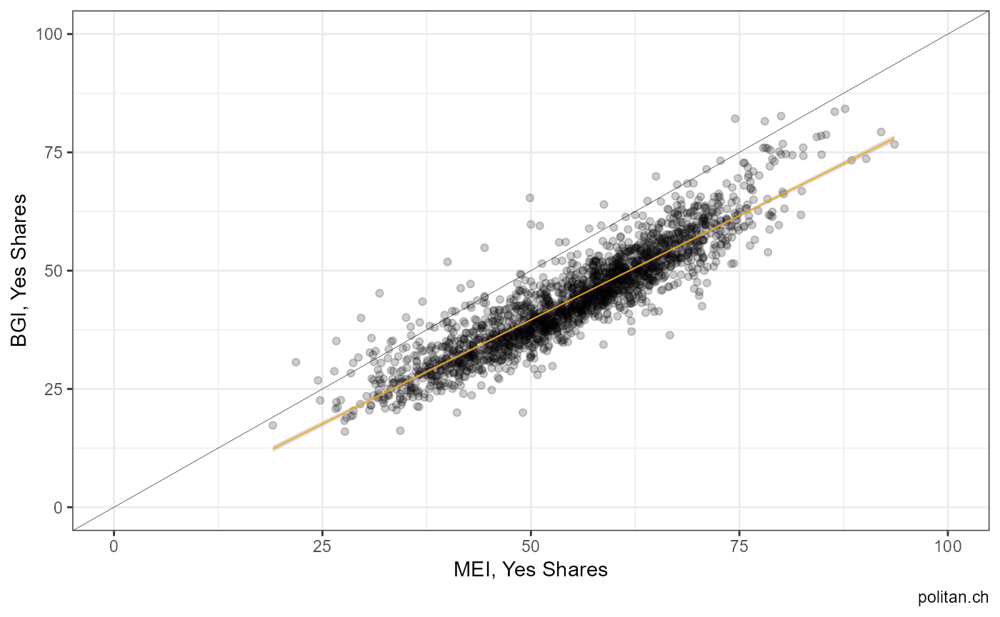

# installation from CRAN (stable)
# install.packages("swissdd")
# install.packages("dplyr")
# installation from github (ongoing updates)
# devtools::install_github("politanch/swissdd")
library(swissdd)
library(dplyr)
library(ggplot2)
library(tidyr)
#get data from API for the 2010-2019 (feb)
federalvotes3 <- get_nationalvotes(geolevel = "municipality", from_date = "2010-03-07", to_date = "2019-02-10")
#get correlations for votes on municipal level with mei
sim_votes <- similar_votes(federalvotes3, id=5800, from=.4, to=.6)
sim_votes
#> # A tibble: 3 x 2
#> id correlation
#> <chr> <dbl>
#> 1 5990 0.554
#> 2 5710 0.480
#> 3 5960 0.443
#extract names of correlated votes
ballotnames <- federalvotes3 %>%
dplyr::select(name, id, mun_id)%>%
filter(id%in%c(5800, sim_votes[1,1]))%>%
distinct()
#subset for correlated votes
corrvotes <- federalvotes3 %>%
filter(id%in%c(5800, sim_votes[1,1]))%>%
dplyr::select(id, jaStimmenInProzent, mun_id)%>%
mutate(id=as.character(id))
#plot
spread(corrvotes , id, jaStimmenInProzent)%>%
ggplot(aes(y=`5800`, x=`5990`))+
geom_point()+
scale_y_continuous(limits=c(0,100))+
scale_x_continuous(limits=c(0,100))+
geom_abline(intercept = 0, slope=1, size=.1)+
geom_smooth(method="lm", size=.1, color="orange")